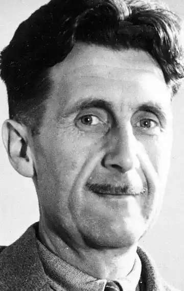
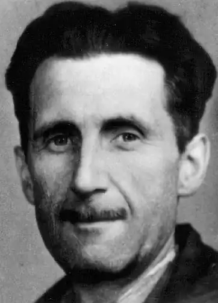
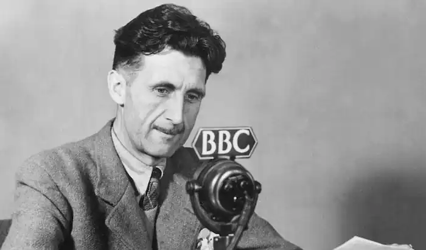
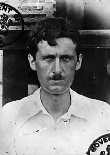

ОРУЕЛЛ, Джордж (Orwell George; автонім: Блер. Ерік Артур — 25.06.1903 Мотіхарі, Бенгалія — 21.01.1950, Лондон) — англійський письменник. Змалку жив у Англії. Здобув університетську освіту. Навчався в Ітоні — одному із найпривілейованіших коледжів разом із майбутнім відомим журналістом та критиком С. Коннолі, котрий редагував у роки Другої світової війни "Оглядач" і регулярно публікувався в "Санді Таймз". Перший патріотичний вірш опублікував у 1914 р. З 1922 по 1927 р. служив у Імперській поліції в Бірмі і на ґрунті вражень цих років створив роман "Дні у Бірмі" ("Burmese Days", 1934). У працях 30-х pp. сформувалося своєрідне творче письмо Оруелла. Героєм оповіді й учасником конкретних подій стає Оруелл вчорашній, про котрого розповідає Оруелл сьогоднішній, який чимало обміркував, переоцінив, але намагається бути безпристрасним, пояснити поведінку свого героя, але не прикрашати його. Погляд на себе збоку дозволяє Оруеллу поставитись до подій із гумором, з іронією, не послаблюючи при цьому драматизм;, оповіді, яка цілком може перериватися афористично короткими узагальненнями.
В оповіданні "Убивство слона" ("Shooting аг, Elephant", 1936) Оруелл змалював життя маленького колоніального містечка, просякнутого ненавистю до європейців, і молодого поліцейського, котрий ненавидить свою службу, та, з одного боку, відчуває нестерпне, гнітюче почуття провини перед бірманцями, а з іншого — обурений ставленням до себе: "Мене зачіпали щоразу, коли це видавалося безпечним... Лайки летіли мені вслід із безпечної відстані. Я збагнув тоді: коли біла людина стає тираном, вона знищує свою свободу". Коли молодий поліцейський опиняється сам на сам з бешкетуючим на базарі домашнім слоном, у якого настав "період полювання", зі старим вінчестером 44-го калібру у руках, мешканці містечка чекають, аби він убив слона, і мовчазно диктують йому свою волю І він убиває слона "винятково задля того, аби не виглядати дурнем".
Мотиви вчинків людини цікавитимуть Оруелла понад усе й надалі. Його спроби пояснити, як і чому у людини визріває те чи інше рішенню, стануть менш декларативними і більш переконливими.Повернувшись у Європу, Оруелл мешкав у Парижі та Лондоні, писав романи й оповідання. До того часу, поки не почав публікувати їх більш-менш періодично (жити на гонорари Оруелл зміг лише з 1935 p.), змушений був працювати перемивальником посуду, репетитором, вчителем у бідній приватній школі. Найцікавішою з усіх випадкових заробітків вважав працю у лондонській букіністичній крамниці. В оповіданні 1936 р. "Спогади книгаря" зобразив цілу галерею покупців: від шанованої леді, котра прохає дістати їй книгу, що сподобалась їй років 40 тому (змісту, автора та назви вона не пам'ятає, але пригадує, що у книги була червона палітурка), до дивного мовчазного племені збирачів марок усякого віку, але тільки чоловічої статі. Ці ж спостереження лягли в основу роману "Нехай цвіте аспідістра" ("Keep the Aspidistra Flying", 1936) — про асистента продавця Гордона Комстока, його домагання на працю літераторів, фінансову залежність та вимушений шлюб. Опублікував нотатки "Собаче життя в Парижі та Лондоні" ("Down and Out in Paris and London", 1933), другий роман "Донька священика" ("A Clergyman's Daughter", 1935), героїня котрого Дороті через втрату пам'яті пориває зі своїм попереднім нудним життям незаміжньої жінки та вступає в численні стосунки з волоцюгами та збирачами хмелю. Своїми улюбленими сучасними письменниками Оруелл називав Дж. Джойса, Т.С. Еліота, Д.Ґ. Лоуренса. Стиль роману "Донька священика" вказує на очевидний вплив Дж. Джойса. Про проблеми робітників та безробітних англійської Півночі Оруелл написав у "Дорозі на Віган-Пірс" ("The Road to Wigan Pier"), книзі, опублікованій у 1937 p. Книжковим Клубом лівих.Етапною для Оруелла стала його участь у громадянській війні в Іспанії. Його поїздці до Іспанії 1936 р. передував короткий період щасливого життя в селі, куди він поїхав у 1935 р. і де через рік одружився. До Іспанії Оруелл вирушив, будучи членом Незалежної лейбористської партії. Чотири місяці пробув на арагонському фронті, був тяжко поранений. Воєнні спостереження Оруелл втілив у книзі "Пам'яті Каталонії" ("Homage to Catalonia", 1939). Нові враження наповнили його наступний роман "За ковтком свіжого повітря" ("Coming up for Air", 1939). Оруелл побачив, що поразка в Іспанії республіканців була зумовлена не лише силою та міццю противника, а й також ідейною нетерпимістю, здатністю відштовхувати і навіть переслідувати однодумців. Цим, за його гострою заявою, партія лише допомагала Гітлеру. Тоді Оруелл відійшов від політики і, за його власним зізнанням, "не робив нічого, крім писання книг та вирощування курчат і овочів". У ці роки він опублікував низку збірок оповідань, серед них "У череві кита" ("Inside the Whale", 1940), "Критичні есе"("Critical Essays", 1946), "Убивство слона" ("Shooting an Elephant", 1950). Визначаючи, що він любить і чого не любить, Оруелл в ці роки писав: "Крім письменництва, я понад усе люблю городництво. Мені подобається англійська кухня та англійське пиво, французькі червоні та іспанські білі вина, індійський чай, міцний тютюн, коминки, свічки та зручні крісла. Я не люблю великих міст, гамору, автомобілів, радіо, консерв, центрального опалення та "сучасних" меблів. Письменники, якими я ніколи не перестаю захоплюватися — Шекспір, Свіфт, Філдінґ, Діккенс, Чарлз Рід, Семюель Батлер, Золя, Флобер. Найбільший вплив серед сучасників справив на мене Сомерсет Моем; його мистецтвом прямої, без вигадок, оповіді я захоплююся". Але навіть у цьому спокійному переліку цілком мирних уподобань, що виявляють потяг до затишку та комфорту, міститься прихована авторська самоіронія. Адже пріоритет у цьому шерезі залишається за письменництвом. А пером О. продовжував воювати, обстоюючи людське право бути людиною. У нарисі 1941 р. "Веллс, Гітлер та всесвітня держава" Оруелл писав про необґрунтованість воєнних нарисів Г. Веллса, він оголосив постійне протиставлення Веллсом тверезомислячого науковця реакціонеру-романтику, котрий намагається реставрувати минуле, застарілим. Він вийшов з-під впливу авторитету Веллса, під який підпадало чимало юнаків початку XX ст., та зумів подивитися нате, що відбувається, неупереджено: порядок, планування, наука, заохочувана державою; сталь, бетон, аероплани — все, за що так ратував Веллс, було в Німеччини, і все це було "поставлене на службу ідеям, що подобали би для кам'яного віку. Наука воює на боці забобону". Оруелл вважав: те, що відбувається в сучасному світі, краще за Веллса міг би зрозуміти Дж.Р. Кіплінґ, небайдужий до сили та воїнської слави. "Кіплінґ зрозумів би, чим приваблює Гітлер чи, як на те пішло, Сталін, хоча важко сказати, як би він до них поставився. А Веллс надто розсудливий, аби збагнути сучасний світ". Ці зауваги Оруелла важливі для розуміння специфіки його соціальної фантастики. Найпопулярнішими стали його соціальні сатири: повість-притча "Звіроферма" ("Animal Farm", 1945) та роман "1984" ("Nineteen Eighty-Four", 1949), останній у його творчій біографії. У рік його виходу Оруелл після смерті своєї першої дружини одружився вдруге. Але через рік помер у віці 46 років від туберкульозу, на який нездужав багато років. Свої роздуми про підлеглість життя та долі людини інтересам держави, відкриті ним зв'язки та пропагандистські парадокси Оруелл афористично висловив у девізах тоталітарної держави Океанії у романі "1984": "Війна — це мир", "Свобода — це рабство", "Незнання — сила". Апарат цієї держави становили, за ідеєю Оруелла, чотири міністерства: міністерство правди, що відало інформацією, освітою, дозвіллям та мистецтвами і займалося професійною брехнею, змушуючи людей з допомогою тортур брехати і давати неправдиві свідчення; міністерство миру, що відало війною; міністерство любові, що відповідало за порядок та регламентувало любов, запобігаючи непотрібним для держави її проявам та вселяючи у людей страх і ненависть; міністерство достатку, що займалося економікою. Оруелл створив роман-антиутопію, але різко розмежувався при цьому зі своїм співвітчизником та колегою по перу О. Хакслі. Оруелл писав: "Невибаглива книга на кшталт "Залізної п'яти", написана тридцять з лихвою років тому, містить більш правдиве пророцтво, ніж "О новий, дивний світ". Пафос його розбіжності з інтелектуалом Хакслі полягає в тому, що тоталітарна держава не могла досягнути якогось високого рівня розвитку, позаяк вона нещадна до творців свого добробуту — людей. В англійській традиції Оруелл йде, передусім, за соціальною сатирою Дж. Свіфта, наповнюючи знанням і досвідом XX ст., що пережило одну з найжорстокіших воєн в історії людства, прожекти свіфтівських академіків Лагадо, котрі намагалися знайти спосіб контролю над "правильністю" думок. Кажуть, що назва роману "1984" виникла випадково: не знайшовши найбільш прийнятної, Оруелл, вичитавши рукопис, виніс у заголовок цифри, що його завершували, переставивши місцями дві останні.1984 р. широко відзначили на Заході як "рік роману Оруелла". Є. Чорноземова